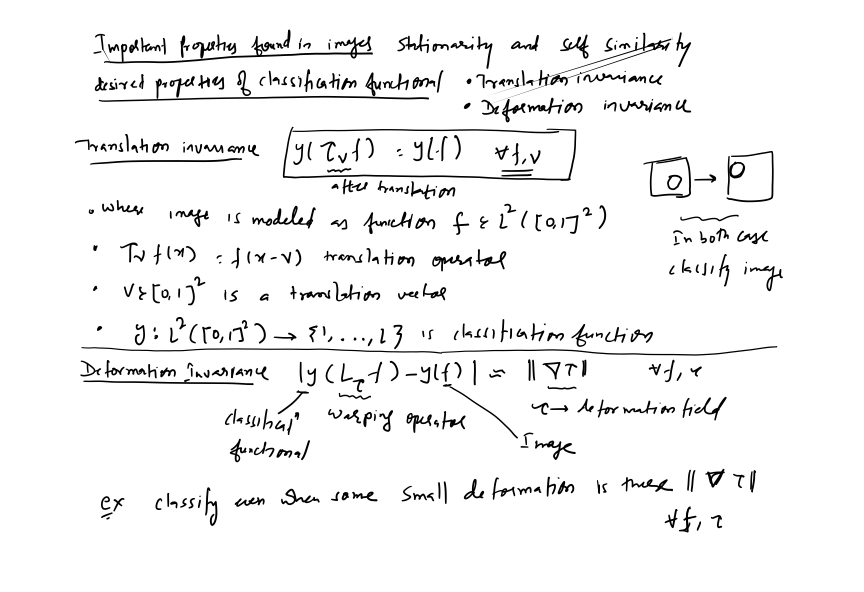
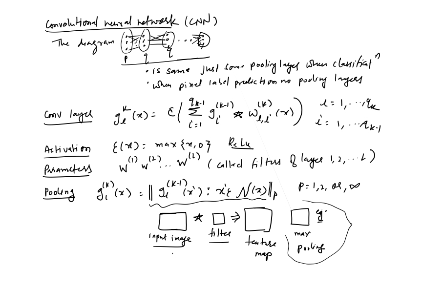
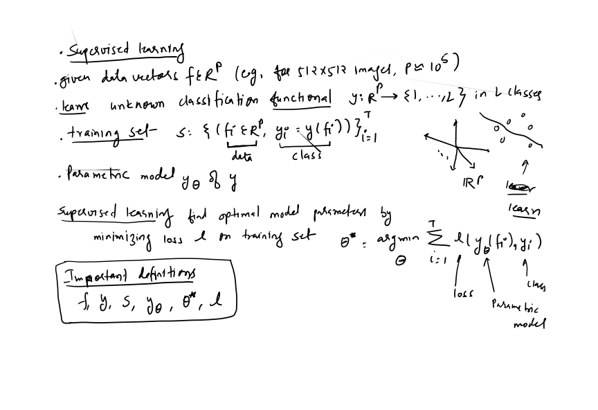
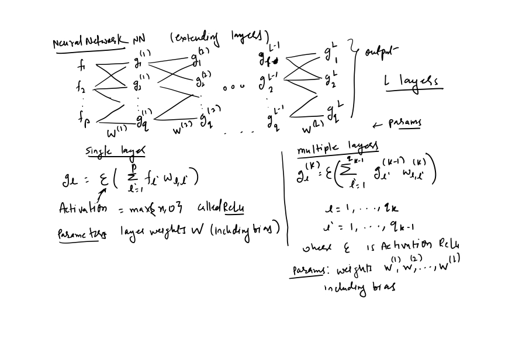
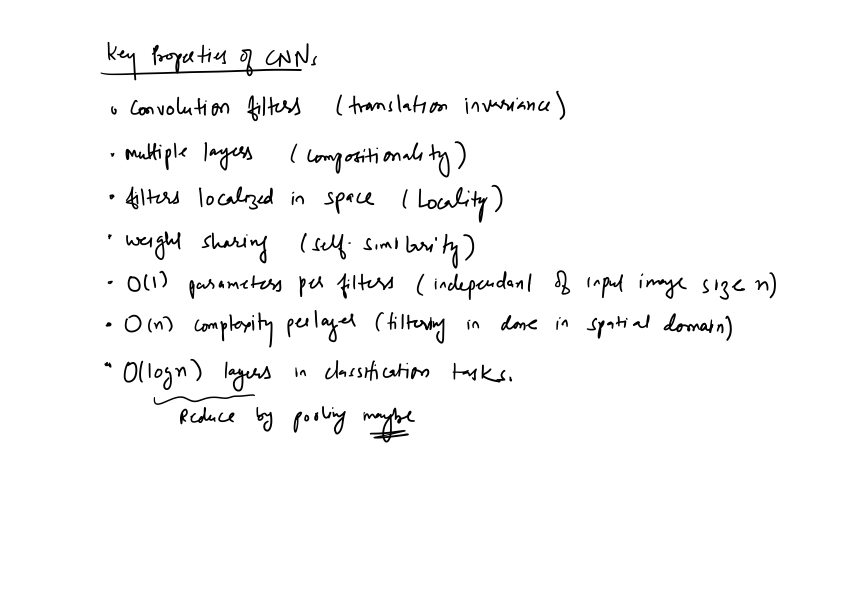

- Docs »
- Convolutional Network 9
-





The Convolution Operation
Motivation
Pooling
Convolution And Pooling as an Infinitely Strong Prior
Variants of the Basic Convolution Function
Structured Outputs
Data Types
Efficient Convolution Algorithms
Random or Unsupervised Features
The Neuroscientific Basis For Convolutional Network
Convolutional Networks And The History Of Deep Learning